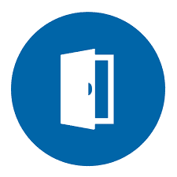
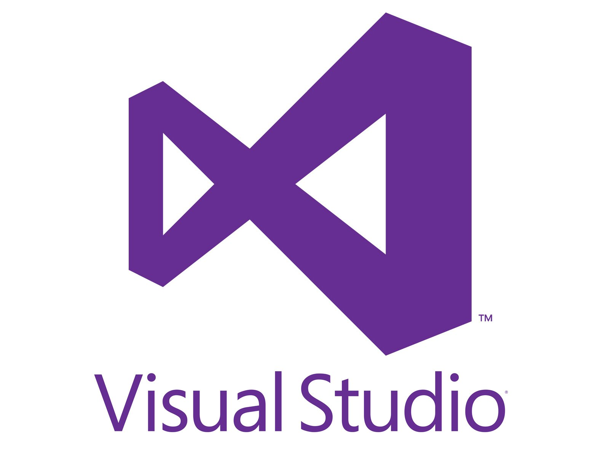
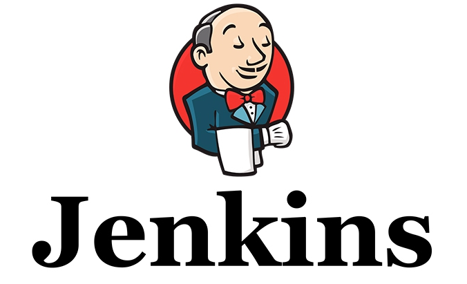
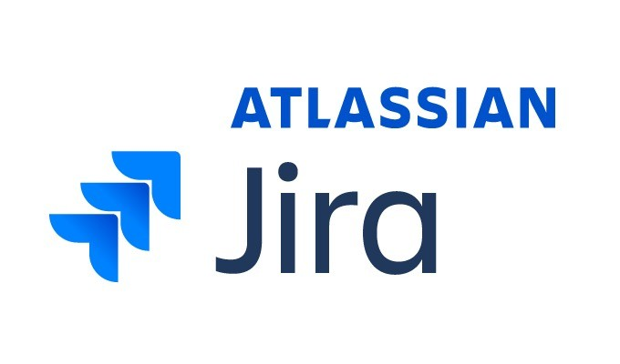

Tarkvaraarenduse elutsükkel koosneb erinevatest etappidest, millest tehtavad tegevused on väga erinevad.
Kuid igas etapis on siiski arendatava tarkvara jaoks vajalikud tegevused.
Need tegevused lahendatakse või tehakse ära tööriistadega, mida nimetatakse (inglise keeles CASE-vahenditeks)
tarkvara raaltehnoloogiaks.
CASE-vahend on kasutusel erinevates etappides ja lubab ära teha arendajal tegevusi nagu Nõuete analüüs,
erinevate protsesside voolu kujundamine, ajakava seadmine, dokumentatsiooni genereerimine, versiooni-
haldus (olgu siis kas dokumentatsioonile endale, või arendatavale tarkvarale), arendustöö enda teostamine
arendusmeeskonna ja arendustöö enda organiseerimine, prototüübi genereerimine jpm.
Sellel eesmärgil kategoriseeritaksegi CASE-vahendid kahte peamisesse kategooriasse.
| Arendusmudeli samm | Sammus tehtavad tööd | Vastav CASE-vahend | CASE-vahendi kirjeldus |
|---|---|---|---|
| Nõuete Määratlemine |
|
IBM DOORS  |
Nõuete kogumiseks, haldamiseks ja versioneerimiseks mõeldud tööriist, mis laseb koostada struktureeritud nõudeid, linkida neid ning tagada jälgitavust kogu projekti elutsüklis. |
| Süsteemi ja Tarkvara kavandamine |
|
Sparx Systems | Modelleerimistööriist, mida kasutame UML-i, BPMN-i ja arhitektuuriskeemide loomiseks. See sobib süsteemi struktuuri, klassidiagrammide, kasutuslugude jms kavandamiseks. |
| Teostus ning moodulite testimine |
|
Microsoft Visual Studio  |
Integratsiooniga arenduskeskkond (IDE), mis toetab koodi kirjutamist, moodulipõhist testimist, kompileerimist, debug-imist ja automatiseeritud testide loomist. |
| Integratsioon ja süsteemi testimine |
|
Jenkins  |
Automaatseks integreerimiseks ja süsteemseks testimiseks mõeldud server, mis võimaldab ühendada mooduleid tervikuks, testikomplektide käivitamine ning ka ehitusprotsessi haldamine. |
| Kasutamine ja hooldus |
|
Jira  |
Tarkvarahoolduse, vigade halduse ja muutustaotluste juhtimise süsteem, mis aitab jälgida vigu, planeerida hooldusversioone ja dokumenteerida parandusi. |